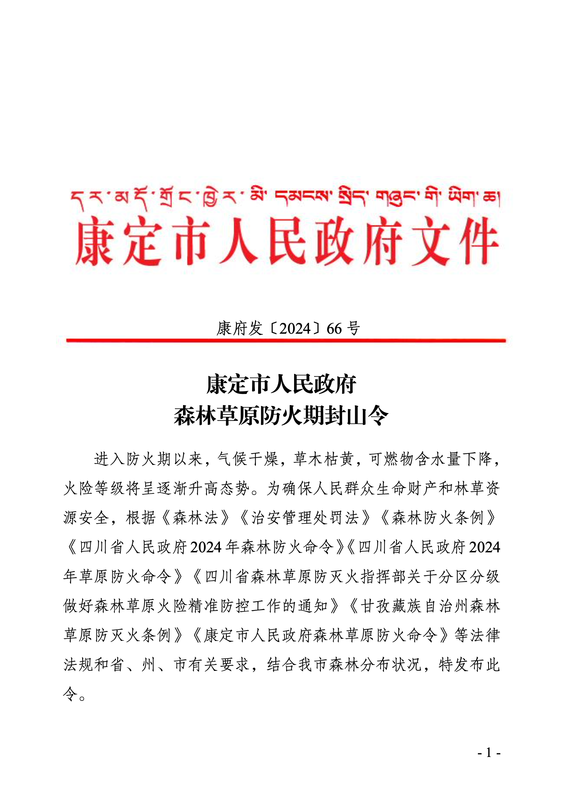

待办事项今日
- 重要核心人才离职竞业限制豁免特批申请09:30
- 特提集团纪检要案跨部门联合处置方案的紧急核准10:15
- 绝密哈萨克斯坦油田资产减值计提差异的绝密调整指令14:00
- 中央审计署预审问题清单整改措施密级签报 17:30
- 绝密关于核心领导班子人事变动的绝密请示18:30
- 财务共享中心岗位编制扩容及内部竞聘流程签批 19:30
- 集团半年度超额利润分配及涉密补贴调整终审决策 20:45
- 2026年度战略预算中涉密研发经费超额配置核准 22:00
- 东南亚区域公司重组及负责人任命建议的请示批复 23:15
